Die App Ist eine Offene Bildungsresource, gefördert über das Projekt SimBiose aus dem Fonds Digitale Lehre der TU Dresden.
Sie dürfen die App als Ganzes sowie einzelne Bausteine gemäß der Creative Commons Lizenz CC BY-SA 4.0 frei verwenden (teilen, bearbeiten, Namensnennung, Weitergabe unter gleichen Bedingungen). Wenn Sie das Material remixen, verändern oder anderweitig direkt darauf aufbauen, dürfen Sie Ihre Beiträge nur unter derselben Lizenz wie das Original verbreiten.
Es wird keine Gewähr für die inhaltliche Richtigkeit und technische Funktion übernommen.
KurzlinkQuelltext für Entwickler
https://gitlab.hrz.tu-chemnitz.de/simbiose/simbiose-w

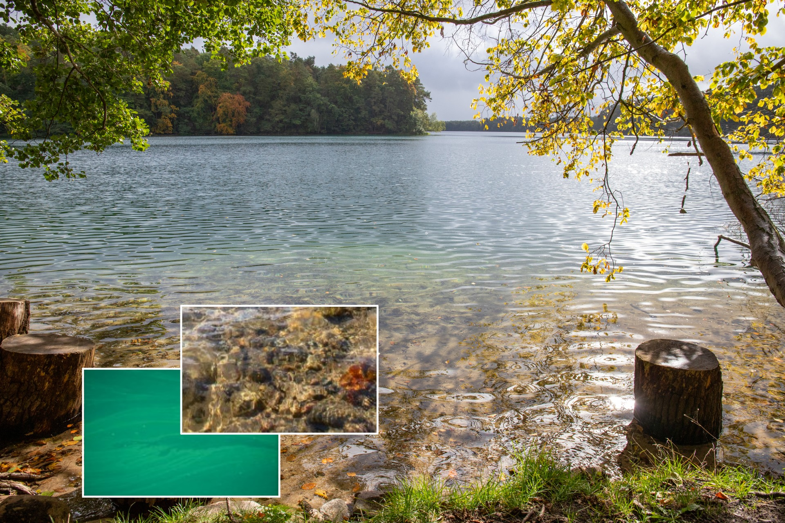
Foto: Felix GrunickeWenn wir vom Ufer in einen Badesee schauen, dann ist das Wasser manchmal so klar, dass wir bis auf den Grund sehen können. Wenn wir genau hinschauen, können wir vielleicht sogar Tiere erkennen, zum Beispiel Daphnien (Wasserflöhe).
Wer öfters am Ufer spazieren geht, kann beobachten dass der See nicht immer klar ist. Manchmal ist er durch mikroskopisch kleine Algen (das Phytoplankton) getrübt und grün gefärbt. Das Phytoplankton ist für die Nahrungskette sehr wichtig, denn es ernährt das Zooplankton und das wiederum die Fische. Andererseits können starke Phytoplanktonentwicklungen zu ernsthaften Problemen führen. Man darf dann nicht mehr im See baden. Bei der Trinkwassergewinnung aus Talsperren müssen die Algen im Wasserwerk entfernt werden.
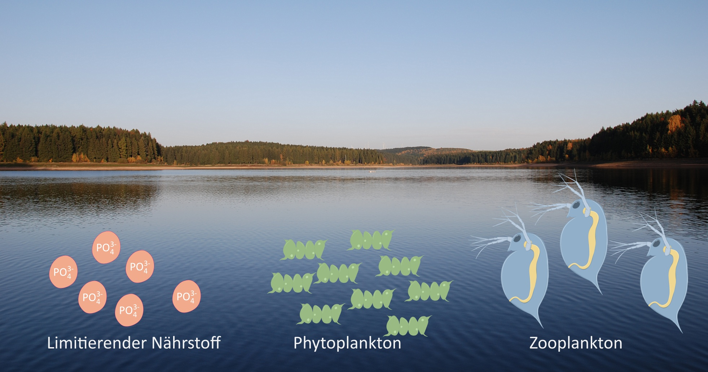
Foto: tpetzoldtDer Wechsel zwischen einem klaren und einem grünen, trüben Gewässer resultiert daraus, dass Schwankungen der Populationsdichte auftreten. Das kann sehr schnell gehen, weil Mikroalgen und Daphnien sehr schnell wachsen und sich vermehren. In der Natur hängt die Geschwindigkeit des Wachstums von vielen Faktoren ab, z.B. von der Jahreszeit, vom Wetter, vom Nährstoffangebot und vom Fischbestand.
Weltweit arbeiten viele Wissenschaftler daran, diese Prozesse besser zu verstehen und mathematisch zu beschreiben, um den Zustand der Gewässer zu verstehen und zum Beispiel eine Algenentwicklung vorhersagen zu können. Hierzu verwendet man mathematische Modelle und neuerdings auch künstliche Intelligenz. Außerdem muss man sehr viel messen.
Der genaue Zeitverlauf einer Algenentwicklung ist in der Realität nur schwer vorhersagbar, weil in einem See viele unterschiedliche Phyto- und Zooplanktonarten vorkommen und viele Umweltfaktoren gleichzeitig wirken. Trotzdem kann das Beispiel “Algenentwicklung in einem See” helfen, grundlegende Wachstumsprozesse zu verstehen. Wachstum ist überall in der Natur zu finden, bei Pflanzen, Insekten oder Wildtieren. Ähnliche Modelle werden auch für die Ausbreitung von Krankheiten angewendet, zum Beispiel während der Corona-Pandemie.
In der App “Populationswachstum” wollen wir uns mit einigen grundlegenden Wachstumsprozessen befassen. Wir beginnen zunächst mit einem ungebremsten, exponentiellen Wachstumsmodell, befassen uns anschließend mit Formen des limitierten Wachstums und betrachten schließlich eine Räuber-Beute-Interaktion zwischen zwei Populationen.
Die App ist für die Darstellung auf Laptop- und PC-Monitoren sowie für verbreitete Tablets optimiert.
Sollte die Schrift dennoch zu groß oder zu klein sein, kann die Schriftgröße in den Systemeinstellungen oder im Webbrowser angepasst werden:
- Windows: [Ctrl] + [-] oder [Ctrl] + [+]
- Android/Chrome: Einstellungen – Bedienungshilfen
- iPad: falls überlappende Schriften auftreten, alle anderen Tabs schließen
Auf Smartphones wird der Portrait-Modus unterstützt.
Entwicklerteam an der TU DresdenThomas Petzoldt, Luisa Henze, Monique Meier
Technologien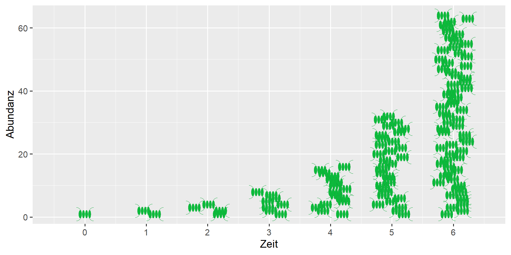
Populationswachstum durch VerdopplungEinzellige Organismen, zum Beispiel Bakterien oder Phytoplankton, können sich sehr schnell vermehren. Die Abbildung zeigt schematisch, wie sich die Anzahl der Phytoplanktonzellen bei einer Zweiteilung verdoppelt. Somit entsteht eine geometrische Folge: 1-2-4-8-16-32-64 und so weiter.
Zur Beschreibung eines solchen Wachstumsprozesses benötigt man drei grundlegende Informationen:
Die Anzahl der vorhandenen Organismen. Man nennt das die Abundanz und verwendet dafür üblicherweise das Symbol \(N\) (number).
Das Populationswachstum pro Zeiteinheit, im vorliegenden Fall die Verdopplung.
Den zugrunde liegenden Zeitschritt \(\Delta t\), in dem der Zuwachs stattfindet, z.B. ein Tag, eine Stunde oder ein Jahr.
Der Zuwachs ist umso größer, je größer die bereits vorhandene Abundanz ist. Aus einer Zelle werden zwei, aus 8 Zellen werden 16.
Je größer der Zuwachs ist, desto schneller erfolgt das Populationswachstum. Anstelle einer Verdopplung (Faktor = 2, Zuwachs = 100%), könnten sich die Organismen auch verzehnfachen (Faktor = 10, Zuwachs = 900%) aber es kann sich auch nur ein kleiner Teil vermehren, z.B. Zuwachs = 10%, dann ist der Faktor = 1,1.
Je kleiner der Zeitschritt ist, in dem die Vermehrung stattfindet, desto schneller wird das Populationswachstum.
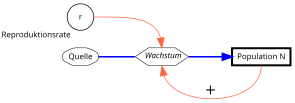
Diskretes Wachstum
Beim diskreten Wachstum erfolgt die Vermehrung in festen Zeitschritten.
Die Anzahl der Zellen (die Abundanz \(N\)) zu einem zukünftigen Zeitpunkt \(t+1\) ist die Abundanz der Zellen zum aktuellen Zeitpunkt \(t\) plus die Anzahl der neu hinzukommenden Zellen \(b\cdot N_{t}\). Hierbei ist \(b\) die Pro-Kopf-Vermehrungsrate (englisch birth rate), der Anteil der Zellen die sich teilen.
\[ N_{t+1} = N_{t} + b \cdot N_{t} \]Die Abundanz \(N\) ist entweder dimensionslos und bedeutet “Anzahl Individuen”, sie kann aber auch mit einer Bezugseinheit angegeben werden, z.B. Individuen pro Quadratmeter oder pro Liter. Auch eine Konzentrationsangabe ist möglich, z.B. mg/L Biomasse oder mg/L Kohlenstoff.
Anstelle der Vermehrungsrate \(b\) verwendet man oft das Symbol \(r\), die Nettoreproduktionsrate. Diese setzt sich aus zwei Teilen zusammen, der Vermehrungsrate \(b\) (engl. birth) und der Absterberate \(d\) (engl. death). Je nachdem ob die Differenz \(r=b-d\) positiv oder negativ ist, wächst die Population oder sie nimmt ab.
Eine Vermehrungsrate \(r=1\) bedeutet, dass für jedes vorhandene Individuum pro Zeitschritt ein neues Individuum dazukommt, also eine Verdopplung.
Kontinuierliches WachstumWenn man sehr viele Individuen betrachtet, die sich kontinuierlich vermehren, also nicht in festen Zeitschritten, spricht man vom exponentiellen Wachstum. Aus der Gleichung oben wird eine Exponentialfunktion:
\[ N_t = N_0 \cdot e^{r \cdot t} \]Die Funktion beschreibt die Entwicklung der Anzahl der Individuen (Abundanz, \(N\)) zum Zeitpunkt \(t\) in Abhängigkeit von der Netto-Reproduktionsrate \(r\) und der Anfangsabundanz \(N_0\) zum Zeitpunkt \(t=0\).
Bei Tieren, die sich nur einmal im Jahr fortpflanzen verwendet man in der Praxis meistens diskrete Wachstumsmodelle, bei Mikroorganismen meistens kontinuierliche Modelle.
Das SystemdiagrammZur Veranschaulichung kann man ein sogenanntes Systemdiagramm benutzen:
- Hierbei bedeutet ein dick umrandetes Rechteck eine Zustandsgröße, z.B. die Abundanz einer Population,
- dicke Pfeile stellen einen Stoff- oder Energiefluss dar und
- dünne Pfeile eine Wechselwirkung.
- Umsatzprozesse, z.B. das Wachstum, sind im vorliegenden Diagramm als Sechseck symbolisiert,
- Feste Parameter, Umsatzraten und Hilfsgrößen werden als Kreis dargestellt.
Eine positive (verstärkende) Rückkopplung kann mit einem (+) symbolisiert werden, eine negative Rückkopplung mit einem (-).
- Wie viele Zellen entwickeln sich bei einer Wachstumsrate von \(r=1\) d-1 aus einer einzelnen Zelle an einem Tag:
- beim diskreten Wachstum in festen Zeitschritten?
- beim kontinuierlichen (exponentiellen) Wachstum?
- Eine Grünalgenpopulation startet mit 10 Zellen pro Liter und einer Wachstumsrate von \(r=1\) d-1. Wieviele Zellen pro Liter findet man bei exponentiellem Wachstum nach 7 Tagen?
- Eine Cyanobakterienpopulation (Blaualgen) wächst mit einer Wachstumsrate von \(r=0.5\) d-1. Nach etwa wieviel Tagen hat sich bei einem exponentiellem Wachstum die Abundanz verzehnfacht?
- In einem See ist eine Klarwassersituation entstanden. Die Daphnienpopulation mit einer Konzentration von 50 Individuen pro Liter leidet unter akutem Nahrungsmangel und vermehrt sich nicht mehr. Allerdings beträgt auf Grund des Fischfraßdrucks die exponentielle Mortalitätsrate \(d=0.1\) d-1. Nach wieviel Tagen befindet sich nur noch eine Daphnie in einem Liter Wasser?
- Ein Gedankenexperiment: In einem Becherglas mit 1 L Nährlösung befinden sich Algen mit einem Frischmasse von 1 mg L-1, die Wachstumsrate beträgt 1 d-1. Nach welcher Zeit wäre das Becherglas komplett mit Algenbiomasse gefüllt, wenn die Algen unlimitiert wachsen könnten?
- Wenn die Zahlen zu groß werden, kann man den Simulationszeitraum verkürzen.
- Man kann Zahlen mit dem Mauszeiger direkt aus der Grafik ablesen.
- Das Ergebnisdiagramm kann mit Hilfe des Kamerasymbols abgespeichert werden.
- Statt Simulation sind manchmal auch Papier und Bleistift oder ein Taschenrechner nützlich, Nachdenken sowieso.
- Wenn eine Population abstirbt, also \(b < d\) ist, dann ist die Reproduktionsrate \(r\) negativ.
- Die Dichte von Algen ist nur wenig größer als die von Wasser. Wir können praktisch mit 1 g cm-3 rechnen.
In der Einleitung wurde von einer Verdopplung ausgegangen aber bei kontinuierlichem Wachstum wird mit einer Exponentialfunktion gerechnet. Warum ist das so?
In der Realität teilen sich nicht alle Algenzellen gleichzeitig, manche teilen sich früher, andere später und die Frühen teilen sich vielleicht schon das zweite Mal. Im Ergebnis erhält man deshalb keine geometrische Folge, sondern ein exponentielles Wachstum.
Aus der schrittweisen (iterativen) Gleichung:
\[ N_{t+1} = N_{t} + r \cdot N_{t} \] wird durch Umformen eine Differenzengleichung:
\[ \frac{N_{t+1} - N_t}{\Delta t} = r \cdot N_t \] beziehungsweise:
\[ \frac{\Delta N}{\Delta t} = r \cdot N_t \]Wenn man sehr viele Zellen und kurze Zeiträume betrachtet, erhält man eine Differentialgleichung:
\[ \frac{dN}{dt} = r \cdot N \]Diese Gleichung kann man mit Hilfe der sogenannten Variablentrennungsmethode analytisch integrieren und erhält die exponentielle Formel:
\[ N_t = N_0 \cdot e^{r\cdot t} \] Die exponentielle Formel hat den Vorteil, dass man nicht schrittweise iterieren muss, sondern die Werte für alle Zeitschritte direkt ausrechnen kann.
Anfangswerte
Parameter
Steuerung
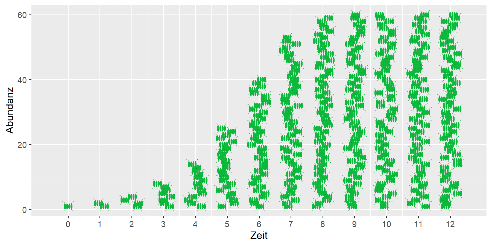
Wachstum kann nicht unbegrenzt fortdauernDie Simulationen zum exponentiellen Wachstum zeigen deutlich, dass ein ungebremstes Wachstum schon nach kurzer Zeit zu einer unvorstellbar großen Abundanz führt.
Nehmen wir an, wir haben einen einzelnen Wasserfloh mit einer Länge von 1.5 mm und einer Masse von 0.25 mg bei einer Populationswachstumsrate von \(r=0.1\) pro Tag (d-1). Bei ungebremster Vermehrung hätten wir nach 6 Monaten bereits 80 Millionen Daphien mit einer Gesamtmasse von 20 kg. Nach 14 Monaten wäre die Müritz, der größte deutsche See mit einem Volumen von 737 Mio m3, komplett mit Daphien ausgefüllt, in gut 15 Monaten sogar der Bodensee.
In der Realität verlangsamt sich das Populationswachstum mit steigender Abundanz, so dass sich eine S-förmige Wachstumskurve ergibt. Eines der einfachsten Modelle dafür ist das sogenannte “logistische Wachstum”.
Das logistische Modell ist eine der wichtigsten Formeln in der Populationsökologie. Allerdings wird dabei nicht berücksichtigt, wodurch die Limitation stattfindet. Sie kann bei Daphnien durch Nahrungsknappheit oder Sauerstoffmangel hervorgerufen werden. Bei Algen kommt es zur Selbstbeschattung, weil sich die Algenzellen gegenseitig das Licht wegnehmen. Manche Mikroorganismen besitzen die Fähigkeit zur Selbstregulation. Sie können die Zelldichte an chemischen Ausscheidungen der anderen Zellen erkennen und teilen sich weniger oft, bevor Licht und Nährstoffe knapp werden.
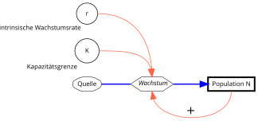
Das Wachstum verzögert sich
Beim logistischen Wachstum ist die Wachstumsrate \(r\) nicht mehr konstant, sondern eine Funktion der Abundanz:
\[ r = r_{max} \cdot \left(1 - \frac{N}{K}\right) \]Hierbei ergibt sich die eigentliche Wachstumsrate \(r\) aus dem Produkt der artspezifischen (intrinsischen) Reproduktionsrate \(r_{max}\) und einem dimensionslosen Term \(\left(1 - \frac{N}{K}\right)\), wobei \(r\) die realisierte Reproduktionsrate und \(K\) die Kapazitätsgrenze (carrying capacity) ist.
Die Wachstumsgleichung dafür lautet jetzt:
\[ N_t = \frac{K N_0 e^{r t}}{K + N_0 (e^{r t}-1)} \]Das sieht relativ kompliziert aus, aber man kann gut damit rechnen. In Wirklichkeit ist diese Formel die Lösung einer Differentialgleichung:
\[ \begin{align} \frac{dN}{dt} &= r_{max} \cdot \left(1 - \frac{N}{K}\right) \cdot N \end{align} \] Diese beschreibt die Änderung der Population pro Zeiteinheit, genau so wie im Systemdiagramm.
ErklärungDas Wachstum findet so lange statt, bis die Umweltkapazität \(K\) erreicht ist. Bei geringer Populationsdichte, also wenn \(N \ll K\) ist, dann ist der Term in Klammern annähernd gleich 1 und das Wachstum maximal. Das Produkt \(r \cdot \left(1 - \frac{N}{K}\right)\) beträgt annähernd \(r\).
Je mehr sich die Abundanz \(N\) der Kapazitätsgrenze annähert, desto kleiner wird \(r \cdot \left(1 - \frac{N}{K}\right)\) und konvergiert bei \(N \rightarrow K\) gegen Null.
Setze die logistische Wachstumsrate auf den kleinstmöglichen Wert (\(r_{max}=0.02\)) und die Kapazitätsgrenze \(K=500\):
- Welche Form zeigt die Wachstumskurve?
Verschiebe nun den Regler von \(K\).
Warum hat eine Vergrößerung von \(K\) nur einen geringen Einfluss?
Warum hat eine Verkleinerung von \(K\) einen größeren Einfluss?
Setze jetzt wieder \(r_{max}=0.1\) und \(K=100\).
Was passiert, wenn man die Anfangsabundanz \(N_0\) verändert?
Setzte nun die Anfangsabundanz auf eine größeren Wert, z.B. 120. Was passiert?
Im Folgenden wollen wir verschiedene Arten des Gleichgewichts untersuchen:
- \(N_0=0, r_{max}=0.1, K=100\)
- \(N_0=1, r_{max}=0, K=100\)
- \(N_0=100, r_{max}=0.1, K=100\)
Erläutere zunächst durch Interpretation, wie die unterschiedlichen Gleichgewichtszustände entstehen.
Versuche durch Einsetzen der Werte in die Gleichungen zu verstehen, warum es zum Gleichgewicht kommt. Hierfür ist die Gleichung der Ableitung \(dN/dt= ...\) einfacher zu verstehen als die integrierte Form.
Bei im Vergleich zu \(K\) kleiner Startabundanz \(N_0\) entspricht die Wachstumskurve am Anfang nahezu einem exponentiellen Wachstum. Die Abundanz ist weit weg von \(K\) so das dessen Vergrößerung keinen Einfluss mehr hat.
Bei einer Verkleinerung von \(K\) in die Nähe der Abundanz, wird die Limitierung deutlich sichtbar und die Wachstumskurve flacht sich ab.
Der Wert von \(N_0\) beeinflusst lediglich, wie schnell der Wert von \(K\) erreicht wird. Er hat keinen Einfluss auf den Endwert.
Wenn die Startabundanz über der Kapazitätsgrenze liegt, verringert sich die Population so lange, bis \(K\) erreicht ist.
Im Experiment können wir drei verschiedene Arten von Gleichgewichten erkennen. Wenn \(N_0=0\) ist, sind keine Organismen da, die wachsen können. Wir haben sozusagen ein “steriles System”. Die Abundanz bleibt auf 0.
Wenn \(r_{max}=0\) und \(N_0 > 0\) sind, dann sind zwar Organismen da, aber sie vermehren sich nicht. Es kann auch sein, sie vermehren sich, aber Vermehrung und Absterben halten sich genau die Wage.
Beide Gleichgewichte sind “labil” (oder instabil). Wenn zu \(N_0 = 0\) nur ein kleiner Wert hinzukommt, beginnt das Populationswachstum, das Gleichgewicht wird verlassen und die Abundanz bewegt sich in Richtung \(K\). Dasselbe passiert, wenn im zweiten Fall \(r_{max} > 0\) wird.
Im dritten Fall (bei \(N = K\)) handelt es sich um ein stabiles Gleichgewicht. Es wird erreicht wenn \(N\) kleiner ist als \(K\) aber auch wenn \(N\) größer ist als \(K\). Selbst wenn die Abundanz kurzzeitig von \(K\) wegbewegt wird, stellt sich \(K\) wieder ein. Man nennt dies auch “Resilienz”.
Das logistische Modell ist die theoretische Grundlage für die Unterscheidung zwischen r- und K-Strategen. Unter einem r-Strategen versteht man Arten, die sich schnell vermehren, “koste es, was es wolle”. K-Strategen sind hingegen Arten, die eine möglichst hohe Abundanz (ein hohes K) erreichen können. Nach modernerer Auffassung sind es Organismen, die auch bei Nahrungsknappheit gut überleben und Verluste minimieren können.
Siehe dazu auch Ein-Spezies-Modelle in Wikipedia.
Diskretes Wachstum kann zu Chaos führenDas logistische Modell und dessen Gleichgewichte sind ein anschauliches Beispiel aus der Chaostheorie. Die unter “Aufgaben” beschriebenen Experimente setzen voraus, dass das Populationswachstum kontinuierlich erfolgt, d.h. mathematisch mit einer Differentialgleichung beschrieben wird.
Wenn sich das Populationswachstum in Form von Generationen entwickelt, z.B. bei Wildtieren die sich nur einmal im Jahr fortpflanzen, dann ist der Zeitschritt “diskret”. Mathematisch ist das eine Differenzengleichung.
In diesem Fall kann die Kapazitätsgrenze zeitweilig überschritten werden. Anschließend kommt es zu einem teilweisen Zusammenbruch der Population, z.B. auf Grund von Futtermangel. Im anschließenden Jahr kann sich die Population wieder erholen usw. Somit entsteht ein Zyklus und unter bestimmten Bedingungen ein chaotisches Muster.
Mehr dazu steht unter Logistische_Gleichung in Wikipedia.
Wenn Du es selbst ausprobieren willst, kannst Du eine Mail an die Entwickler der App schreiben. Vielleicht bauen sie das Chaosmodell mit in die App ein.
Anfangswerte
Parameter
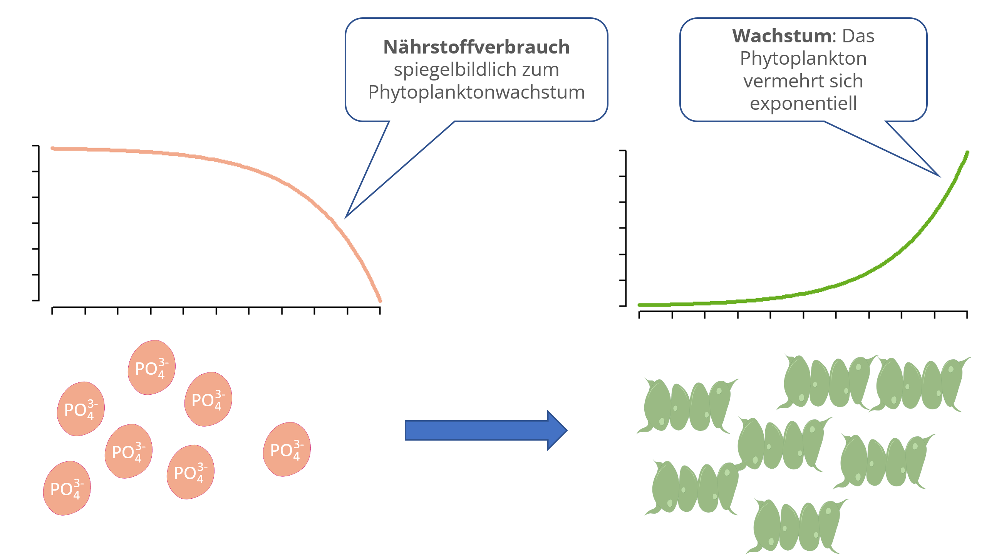
Vom logistischen Wachstumsmodell zur NährstofflimitationDas logistische Wachstumsmodell hat eine große theoretische Bedeutung und wird in der Praxis oft eingesetzt, z.B. für Wachstumsexperimente mit Bakterien und Algen im Labor oder für die biotechnologische Produktion von Medikamenten in der Industrie.
Allerdings hat das logistische Modell zwei entscheidende Nachteile:
Man muss von vornherein wissen, wo die Kapazitätsgrenze \(K\) liegt, z.B. aus einem vorangegangenen Experiment.
Es ist nicht bekannt, warum das Wachstum aufhört, ob z.B. ein Nährstoff aufgebraucht wurde oder ob sich die Algen gegenseitig zu stark beschatten.
Beim ressourcenlimitierten Wachstumsmodell wird dieses Problem dadurch gelöst, indem man für eine limitierende Ressource eine zusätzliche Gleichung angibt. Wenn das Phytoplankton wächst, wird eine Ressource verbraucht, z.B. der Phosphor. Wenn der Phosphor aufgebraucht ist, stoppt das Wachstum. Die Kurven von Phytoplankton und Phosphor zeigen ein spiegelbildliches Verhalten.
Anstelle des Phosphors kann auch der Stickstoff limitieren oder auch beide. Dann benötigt man eine weitere Gleichung (Mehrfachlimitation). Der Einfluss von Licht und Temperatur kann ebenfalls berücksichtigt werden.
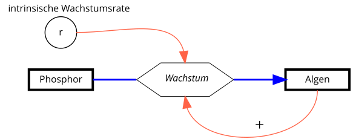
Phosphorlimitation des Algenwachstums
Im Beispiel soll das Populationswachstum des Phytoplanktons in Abhängigkeit vom Phosphor (\(P\) in mg m-3) beschrieben werden. Zur Vermeidung doppelter Buchstaben nennen wir das Phytoplankton “Algen” \(A\), als Maßeinheit verwenden wir das Biovolumen oder den in den Organismen enthaltenen Kohlenstoff in mg m-3. Für die Zeit wählen wir die Maßeinheit Stunden (h).
\[ \begin{align} \frac{dA}{dt} &= r(P) \cdot A \\ \frac{dP}{dt} &= - r(P) \cdot A \cdot \frac{1}{Y}\\ r(P) &= r_{max} \cdot \frac{P}{k_P + P} \end{align} \]In moderneren Modellen wird die Biomasse oft in Kohlenstoffeinheiten angegeben. Kohlenstoff ist das “Element des Lebens” und hat bei den meisten Organismen ungefähr 50% Anteil an der Trockenmasse.
Die erste Gleichung \(dA/dt\) ist im Prinzip wieder die exponentielle Wachstumsgleichung, allerdings ist die Wachstumsrate \(r\) jetzt eine Funktion von \(P\), also \(r=f(P)\). Wenn der Nährstoff \(P\) aufgebraucht ist, geht die Wachstumsrate \(r(P)\) gegen Null.
Der erste Teil der Phosphorgleichung \(dP/dt\) entspricht der Gleichung der Algen, allerdings mit negativem Vorzeichen. Wenn Algen wachsen, wird Phosphor verbraucht. Der Umrechnungsfaktor \(1/Y\) dient dazu, den Phosphor und den Kohlenstoffanteil der Algen stöchiometrisch umzurechnen. Hier verwendet man üblicherweise den Kehrwert des Ertragskoeffizienten \(Y\) (“Yield”, engl. Ertrag). Ein Wert von \(Y=41\) bedeutet, dass für 1 mg Phosphor 41 mg Kohlenstoff in der Biomasse gebunden werden.
Die Funktion \(r(P)\) beschreibt die Abhängigkeit der Wachstumsrate \(r\) vom Phosphor als sogenannte Sättigungskinetik. Bei steigender Phosphorkonzentration steigt die Wachstumsrate zunächst steil an. Bei Nährstoffüberschuss flacht die Kurve ab und nähert sich einem Maximalwert \(r_{max}\) an. Der Wert \(k_P\) ist die Nährstoffkonzentration bei der 50% der maximalen Wachstumsrate erreicht werden. Je kleiner \(k_P\) ist, umso besser ist eine Algenart an niedrige Nährstoffkonzentrationen angepasst.
Vergleiche das ressourcenlimitierte Wachstum mit dem logistischen Wachstum.
Worin besteht der Vorteil des ressourcenlimitierten Wachstums gegenüber der logistischen Wachstumsfunktion?
Gibt es auch Nachteile?
Untersuche den Einfluss von \(r\), \(k_P\) und \(Y\) auf das Wachstum.
Bei welchen Werten von \(r\) ist das Wachstum am schnellsten?
Bei welchen Werten von \(k_P\) ist das Wachstum am schnellsten und die Nährstoffausnutzung am besten?
Wovon hängt die Steilheit des Übergangs in die Limitierung ab?
Welcher Parameter und welcher Anfangswert bestimmt die erreichte maximale Phytoplanktonmenge? Die maximal erreichte Abundanz entspricht der Kapazitätsgrenze \(K\) beim logistischen Modell.
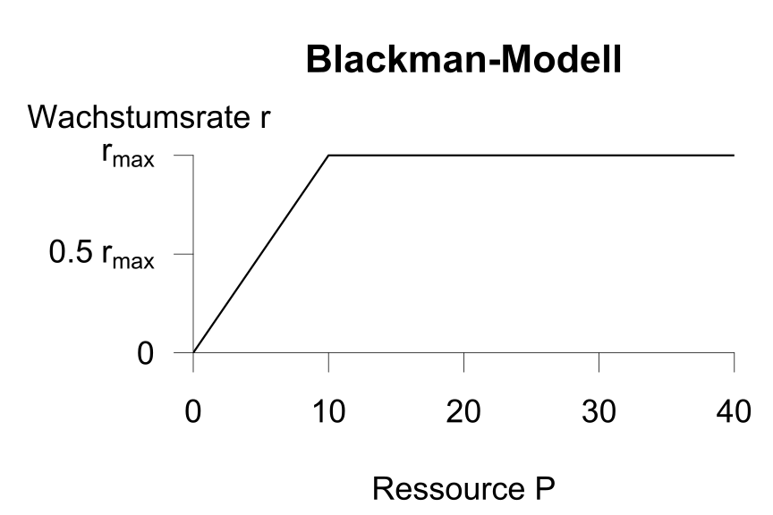
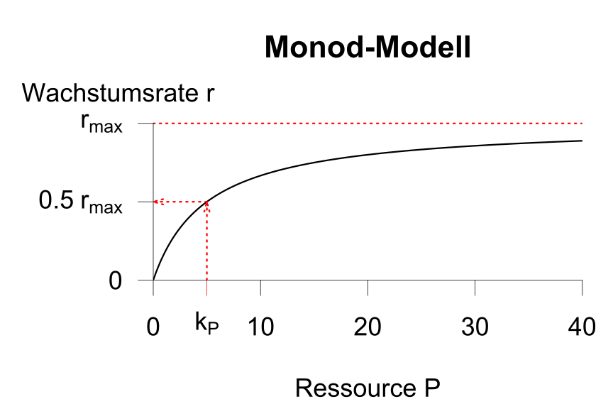
Die WachstumskinetikDie Abhängigkeit der Wachstumsrate \(r\) von der Nährstoffkonzentration wird über eine sogenannte Kinetik beschrieben. Hierbei geht es darum, wie schnell die Algen wachsen, das nennt man auch eine funktionelle Reaktion (engl.: functional response). Im Gegensatz dazu beschreiben die eigentlichen Wachstumsmodelle (z.B. das logistische und das ressourcenlimitierte Modell) wie viele Algen insgesamt wachsen können. Das nennt man numerische Reaktion (engl.: numerical response).
Für die Abhängigkeit der Wachstumsrate von einer Ressource (z.B. Phosphor) wird eine Sättigungskinetik verwendet. Je mehr Nährstoffe vorhanden sind, umso schneller ist das Wachstum. Ab einer bestimmten Nährstoffkonzentration wird eine Sättigung erreicht, das heißt noch mehr Nährstoffe führen nicht zu noch mehr Wachstum.
Zur mathematischen Beschreibung existieren verschiedene Möglichkeiten. Beim Blackman-Modell steigt die Wachstumsrate zunächst proportional mit der Nährstoffkonzentration an. Hierbei ist \(k_b\) der Proportionalitätsfaktor. Wenn die Nährstoffkonzentration (\(P\)) für die maximal mögliche Wachstumsrate (\(r_{max}\)) überschritten wird, bleibt die Wachstumsrate \(r\) konstant bei \(r_{max}\):
\[ r = r_{max} \cdot \min(k_b \cdot P, 1) \]Beim Monod-Modell wird allmählicher Übergang vom Anstieg in die Sättigung angenommen. In der hierfür verwendeten Gleichung:
\[ r = r_{max} \cdot \frac{P}{k_P + P} \] wird die Limitation durch ein Verhältnis realisiert, bei dem im Nenner eine sogenannte Halbsättigungsrate \(k_P\) steht, die die gleiche Maßeinheit wie \(P\) hat. Dadurch ist dieser Term dimensionslos. Wenn Phosphorkonzentration und Halbsättigungsrate gleich sind (also \(P=k_P\)) ist, dann ist das Verhältnis \(P/(P + P) = 0.5\). Wenn jedoch \(P\) sehr groß ist (\(P >> k_p\)), dann konvergiert das Verhältnis gegen 1 und die Wachstumsrate \(r\) gegen \(r_{max}\).
Schnell wachsende Phytoplanktonarten haben eine große maximale Wachstumsrate, Arten, die mit wenigen Nährstoffen auskommen, haben eine kleine Halbsättigungskonstante.
Der Einsatz von Düngemitteln in der Landwirtschaft ist für unsere Ernährung sehr wichtig aber es kommt darauf an, Überdüngung zu vermeiden. Überschüssiger Phosphor und Stickstoff kann von den Pflanzen nicht mehr aufgenommen werden und landet in unseren Flüssen und Seen und schließlich in der Ost- oder Nordsee.
In den Gewässern führt erhöhter Phosphor- und Stickstoffeintrag zu verstärktem Phytoplanktonwachstum und das Wasser wird trübe. Im Tiefenwasser führen die absterbenden Algen dann zum Sauerstoffschwund. Verstärktes Wachstum von Plankton und Wasserpflanzen und die daraus resultierende Verschlechterung der Wasserqualität nennt man Eutrophierung.
Weitere Informationen zum Nährstoffeintrag und zur Eutrophierung findet man zum Beispiel auf den Internetseiten des Umweltbundesamts.
Anfangswerte
Parameter
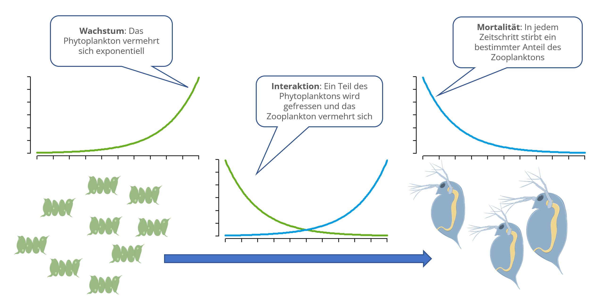
Interaktion zwischen PopulationenDie bisher betrachteten Modelle beschreiben jeweils nur das Wachstum einer einzelnen Population. In der Realität findet man fast immer mehrere Populationen gemeinsam, die entweder in Konkurrenz zueinander stehen oder Nahrungsketten und Nahrungsnetze bilden.
Im folgenden betrachten wir einen Ausschnitt aus einer Nahrungskette mit einer Beutepopulation und einer Räuberpopulation, z.B. Phytoplankton (Algen) und Zooplankton (Daphnien).
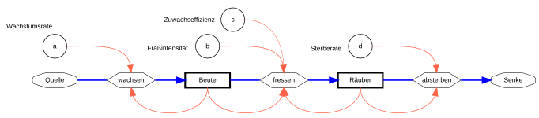
Das Räuber-Beute-Modell von Lotka und Volterra
Im Unterschied zum logistischen oder zum ressourcenlimitierten Wachstum lassen sich in der Natur nur selten stabile Gleichgewichte beobachten, sondern die Abundanz schwankt. Hierfür gibt es verschiedene Ursachen, z.B. den Vermehrungszyklus oder eine unterschiedliche Nahrungsverfügbarkeit durch die Jahreszeiten und das Wetter.
Populationsschwankungen können aber auch aus Wechselwirkungen zwischen Populationen resultieren.
Solche Wechselwirkungen wurden Anfang des 20. Jahrhunderts vom italienischen Mathematiker und Physiker Vito Volterra und dem österreich-amerikanischen Chemiker und Versicherungsmathematiker Alfred Lotka untersucht und mathematisch beschrieben.
Ihr Modell besteht aus zwei Gleichungen, einer für die Beutepopulation (z.B. Algen) und einer für die Räuberpopulation (z.B. Daphnien). In Abwandlung zur von Volterra (1926) ursprünglich verwendeten Schreibweise der Gleichungen verwenden viele Wissenschaftler und Lehrbücher unterschiedliche Symbole und Varianten. Wir verwenden im folgenden eine vereinfachte Notation mit \(B\) für die Beutepopulation und \(R\) für die Räuberpopulation. Für die Modellparameter verwenden wir fortlaufende Buchstaben \(a, b, c, d\), die man wie folgt interpretieren kann:
\(a\): Vermehrungsrate des Phytoplanktons (Beutepopulation)
\(b\): Fraßverlust des Phytoplanktons (Beute) durch Fraß der Daphnien (Räuber)
\(c\): Zuwachseffizienz der Daphnien (Räuber) durch Nahrungsaufnahme
\(d\): Sterberate der Daphnien (Räuber)
Das Modell besteht nun im Prinzip aus drei Prozessen. Das Wachstum der Beutepopulation (z.B. Algen) und das Absterben der Räuberpopulation (z.B. Daphnien) entsprechen jeweils einem exponentiellen Wachstumsmodell mit positiver bzw. negativer Änderungsrate.
Exponentielles Wachstum der Beutepopulation:
\[ \frac{dB}{dt} = a \cdot B\\ \]Exponentielles Absterben der Räuberpopulation:
\[ \frac{dR}{dt} = - d \cdot R\\ \]Der dritte Prozess beschreibt die Interaktion zwischen Räuber un Beute. Hierbei hängt die Verlustrate der Beutepopulation \((b \cdot R)\) von der Abundanz der Räuberpopulation ab und die Wachstumrate der Räuberpopulation von der Abundanz der Beutepopulation \((c \cdot B)\). Wenn man \(b\) und \(c\) unterschiedlich wählt, kann man die trophische Effizienz (\(c/b\)) berücksichtigen, z.B. dass nur 10% der Nahrung für die Vermehrung genutzt werden.
Somit ergibt sich das folgende Gleichungssystem, bei dem zur besseren Erkennbarkeit die Verlustrate der Beutepopulation durch Gefressenwerden und die Wachstumsrate der Räuberpopulation durch zusätzliche Klammern symbolisiert sind:
Gleichungssystem \[ \begin{align} \frac{dB}{dt} &= a \cdot B - (b \cdot R) \cdot B \\ \frac{dR}{dt} &= (c \cdot B) \cdot R - d \cdot R \end{align} \]Die Klammern dienen nur zur Veranschaulichung und werden normalerweise weggelassen.
Gegeben sind zunächst die Standardparameter und Startwerte wie folgt:
\(a=b=c=d=0.1\), \(B_0=1\), \(R_0=0.5\).
- Verändere den Anfangswert für den Räuber (\(R_0\)) auf 2 bzw. auf 1.
- Was passiert?
- Setze nochmals \(R_0=2\). Versuche nun, eine Vermehrungsrate der Beute (\(a\)) zu finden, bei dem wieder ein Gleichgewicht auftritt.
- Man kann den gesuchten Wert entweder durch Probieren oder durch Umstellen des Gleichungssystems finden.
Periodendauer und Amplitude
Stelle zunächst die Standardparameter wieder her, z.B. indem die App neu geladen wird.
Durch Veränderung der Parameter \(a, b, c, d\) lässt sich die Periodendauer ändern. Zur Vereinfachung sollen alle Parameterwerte zunächst gleich sein (\(a = b = c = d\)). Finde nun Werte, so dass sich die Periodendauer:
- verkürzt
- verlängert
Warum wirken die Parameter in die jeweils beobachtete Richtung?
Hinweis: Die Checkbox “Werte abtasten” aktiviert zusätzliche Hilfslinien. Mit Hilfe der Maus lassen sich konkrete Werte ablesen.
Setze nun wieder die Standardparameterwerte ein.
Verdopple die Beute-Vermehrungsrate \(a\) auf 0.2. Wie ist das Ergebnis zu erklären?
Verdopple die Räuber-Sterberate \(d\) auf 0.2. Wie ist das Ergebnis zu erklären?
Welche Folgerungen lassen sich zu Umsatz und Populationsdichte in realen Systemen treffen?
- Verdopple und halbiere den Umsatz zwischen \(B\) und \(R\). Verwenden dazu Parameter im Bereich: \(b = c = 0.05 \dots 0.2\).
- Wie lässt sich das Ergebnis erklären? Welche Informationen sind erforderlich, um beurteilen zu können, ob das Ergebnis realistisch ist?
Analytische Ermittlung von Gleichgewichten und Mittelwerten
Stelle das Gleichungssystem um und ermittle den Gleichgewichtszustand.
Im Gleichgewichtszustand sind die ersten Ableitungen beider Gleichungen gleich 0. Gehe zu Aufgabe (2) zurück und finde den Wert des Parameters a durch Umstellung und Lösung des Gleichungsystems.
Über die Checkbox “Werte ablesen” kann man aus den angezeigten Punkten die Mittelwerte von Beute und Räuber für jeden Zyklus abschätzen. Hierbei reicht ein Zyklus immer von einem Maximum zum nächsten.
Vergleiche den Gleichgewichtstand (horizontale gepunktete Linien) mit den nach (b) abgeschätzten Mittelwerten. Überlege bzw. recherchiere, wie man den Mittelwert aus den Anfangswerten und den Modellparametern direkt erhalten kann.
In der Regel lernen wir, dass die Koordinatenachsen immer mit Maßeinheiten beschriftet werden sollen. Das ist sehr wichtig aber es gibt Ausnahmen. Bei theoretischen Modellen wird manchmal nur die Bedeutung ohne Maßeinheit an die Achse geschrieben, z.B. “Zeit”, “Häufigkeit” oder “Abundanz”.
In der Physik geht man oft noch weiter und skaliert alle Achsen auf ein Intervall von Null bis Eins. In den vorliegenden Apps haben wir darauf verzichtet, so dass man sich unter den Werten etwas vorstellen kann. So können wir je nach Anwendung eine Maßeinheit festlegen, z.B.”Stunden” bzw. “Tage” für schnell wachsende Algen und Daphnien oder “Jahre” für Schneeschuhhasen und Luchse.
Bei den Maßeinheiten für Abundanz und Biomasse muss beachtet werden, dass Algen und Daphnien unterschiedlich groß sind und eine unterschiedliche Körpermasse besitzen. Wenn man auf die Maßeinheit verzichtet, sind die Werte auf der y-Achse nur relative Größen, die nicht miteinander vergleichbar sind.
Betrachtet man die Biomasse, kann man mit einem Trick annähernd vergleichbare Verhältnisse herstellen. Als Faustregel gilt, dass in einer Nahrungskette etwa 10% der Energie von einer trophischen Ebene an die nächste weitergegeben wird.
Wir können das berücksichtigen, wenn der Parameter \(c\) (“Zuwachseffizienz”) nur ein Zehntel von \(b\) (“Fraßintensität”) beträgt, also z.B. \(b=0.2\) und \(c=0.02\). Außerdem muss man in diesem Fall die Anfangswerte entsprechend anpassen, z.B. \(B_0=1\) und \(R_0=0.05\).
Durch Änderung der Parameter können auch Kombinationen eingestellt werden, die nicht sinnvoll oder unrealistisch erscheinen. Dies liegt zum Teil daran, dass die Parameterwerte relativ zur Zeit angegeben werden, z.B. Wachstum pro Tag oder pro Stunde. Daher ist es manchmal notwendig, auch die Zeiteinheit anzupassen und die Werte und Maßeinheiten einer genauen Realitätsprüfung zu unterziehen.
Um das Verständnis zu erleichtern, können wir die Maßeinheiten außer Acht lassen und die Ergebnisse nur qualitativ betrachten, d.h. wenig - viel, Zyklus - Gleichgewicht, größere Amplitude - kleinere Amplitude, längerer Zyklus - kürzerer Zyklus.
Im Zusammenhang mit dem Räuber-Beute-Modell wird oft das Beispiel von Schneeschuhhase und Luchs genannt. Die beiden Arten leben in Nordamerika, vor allem in Kanada.
Es konnte beobachtet werden, dass die Fellverkaufszahlen der Jäger in einem Zyklus von 9 bis 11 Jahren schwanken. Die Vermutung lag nahe, dass es sich hier um einen Lotka-Volterra-Zyklus handelt. Bei näherer Betrachtung zeigten sich allerdings Unstimmigkeiten und es wurden verschiedene andere Erklärungen gegeben. Eine Erklärung bestand darin, dass die schwankenden Fellverkäufe auf den Einfluss der Jäger zurückzuführen waren. Eine andere Erklärung besteht darin, dass der Räuber-Beute-Zyklus auf Wechselwirkungen einer niedrigeren trophischen Ebene resultiert, also nicht als Wechselwirkung zwischen Schneehaase und Luchs, sondern von Vegetation und den Schneehasen. Der Luchs folgt dem Zyklus lediglich nach. Näheres dazu findet man im Wikipedia-Artikel Das Lotka-Volterra-Modell.
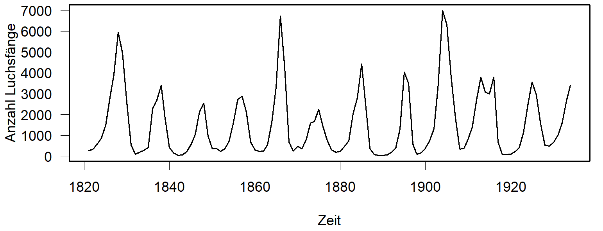
Klassischer Datensatz von Luchsfängen in Kanada, aus Brockwell & Davis (1991) Algen und DaphnienDas System Algen-Daphnien wird in der theoretischen Ökologie ebenfalls als Lehrbuchbeispiel herangezogen. In realen Gewässern lässt sich jedoch meist nur ein kurzer Ausschnitt dieser Dynamik beobachten. Einem jährlichen Algen-Frühjahrsmaximum folgt unmittelbar ein ausgeprägtes Klarwasserstadium. Eine Fortsetzung der Schwingungen wird durch dämpfende Mechanismen wie die Ressourcenlimitierung (insbesondere Phosphor) sowie die Einbindung in ein komplexeres Nahrungsnetz verhindert (Sommer et al., 2012).
Elche und WölfeEin weiteres prominentes Beispiel ist die Wechselbeziehung zwischen dem Elch und dem Wolf. Hierzu wurden im Isle Royale Nationalpark auf einer Insel in einem der Großen Seen in Amerika Untersuchungen durchgeführt. Es handelt sich um die längste Studie zu Räuber-Beute-Systemen der Welt. Auf der Insel leben mit Ausnahme der Forschenden und der sommerlichen Besucher keine Menschen.
Zwischen den Elchen und den Wölfen konnten tatsächlich Wechselwirkungen vom Lotka-Volterra-Typ beobachtet werden. Allerdings gab es nur kurze Abschnitte eines Zyklus. In der Realität wirken auch hier zusätzliche Einflussfaktoren, z.B. Parasiten, die die Elche schwächen. Umgekehrt wurden die Wölfe zeitweilig von einer Viruskrankheit infiziert und wären fast ausgestorben.
In einem besonders kalten Winter wurden Wölfe beobachtet, die eine Strecke von 22km über den zugefrorenen See zur Insel zurückgelegt haben. Das bestätigte eine bereits länger bestehende Vermutung, dass die Wolfpopulation auf der Insel nicht vollständig isoliert ist. Der Austausch mit dem Festland ist für die Wolfpopulation offenbar überlebenswichtig, doch aufgrund der Klimaerwärmung bilden sich solche Eisbrücken nicht mehr alle 3 bis 4 Jahre, sondern nur noch alle 10 Jahre.
Mehr dazu findet man auf den englischsprachigen Webseiten des Nationalparks und zum Forschungsprojekt (https://isleroyalewolf.org/) und im Buch von Vucetich (2024). Auch auf Wikipedia finden sich Artikel in englischer und deutscher Sprache dazu. Ganz besonders zu empfehlen sind die Videos zum Projekt auf Youtube, z.B. https://youtu.be/DS-4IsDg7mA. Weitere Videos in englischer Sprache findet man über die Stichworte: wolves isle royale.
Die Beispiele zeigen, dass Räuber-Beute-Wechselwirkungen in der Praxis weitaus komplizierter sind als das Lotka-Volterra-Modell. Für Vorhersagen ist das Modell nicht geeignet aber man kann, so wie in den Simulationsexperimenten der App, grundlegende Erkenntnisse über das Entstehen von Populationsschwankungen oder die Einstellung von Gleichgewichten ableiten.
In praktischen Modellen werden unterschiedliche Modellbausteine kombiniert: exponentielles Wachstum, logistisches Wachstum, mehrere Ressourcen und Räuber-Beute-Wechselwirkungen. Außerdem werden in den Modellen aktuelle Daten zur Beschreibung von Wetter, Klima und menschlichem Einfluss berücksichtigt.
LiteraturBrockwell, P. J. and Davis, R. A. (1991). Time Series and Forecasting Methods. Second edition. Springer. Series G (p. 557).
Sommer, U., Adrian, R., De Senerpont Domis, L., Elser, J. J., Gaedke, U., Ibelings, B., Jeppesen, E., Lürling, M., Molinero, J. C., Mooij, W. M., van Donk, E., & Winder, M. (2012). Beyond the Plankton Ecology Group (PEG) Model: Mechanisms Driving Plankton Succession. Annual Review of Ecology, Evolution, and Systematics, 43, 429–448. doi:10.1146/annurev-ecolsys-110411-160251
Vucetich, J.A. (2021) Restoring the Balance: What Wolves Tell Us about Our Relationship with Nature. Johns Hopkins University Press.
Datenschutz und Impressum
Wir verwenden nur Cookies, die zwingend erforderlich sind, damit unsere Website und deren Funktionen ordnungsgemäß arbeiten können. Diese Cookies werden automatisch bei Aufruf der Website oder einer bestimmten Funktion gesetzt, es sei denn, Sie haben das Setzen von Cookies durch Einstellungen in Ihrem Browser verhindert. Die durch den Einsatz dieser Cookies erhobenen Daten verarbeiten wir auf Basis des Artikels 6 Absatz 1 Buchstabe f) DSGVO.
- Name des Cookies: weblab.hydro.tu-dresden.de
- Cookie Anbieter: TU Dresden
- Speicherdauer: aktuelle Browser-Session, das Cookie wird beim Schließen des Browsers gelöscht
- Verwendungszweck: ermöglicht es dem Server, Nutzereingaben entgegenzunehmen und Daten an den Browser zurückzusenden
Es werden keine sogenannten Tracking-Cookies genutzt, um Nutzerbewegungen und das Surfverhalten der Nutzenden unserer Seite zu erfassen bzw. zu analysieren.
ImpressumEs gilt das Impressum der TU Dresden mit folgenden Änderungen:
Ansprechpartner:
Technische Universität Dresden
Institut für Hydrobiologie
Dr. Thomas Petzoldt
01062 Dresden
Tel.: +49 351 463-34954
Fax: +49 351 463-37108
E-Mail: thomas.petzoldt@tu-dresden.de
Privacy policy
We use only cookies that are absolutely necessary exclusively for the provision of the service. The cookies will be set automatically by access of this web page, except if setting cookies is disabled in the browser settings. Data processing takes place on the legal basis of section §6 para.1 lit. f GDPR.
- Name of the cookie: weblab.hydro.tu-dresden.de
- Cookie provider: TU Dresden
- Duration of storage: current browser-session, the cookie will be removed after closing the browser
- Purpose: enables the server to accept user input and to send the results back to the web browser
This means specifically that no so-called tracking cookies are used to record or analyse user movements and the surfing behaviour of users of our site.
ImpressumSee the Impressum of TU Dresden with following changes:
Contact person:
Technische Universität Dresden
Institut für Hydrobiologie
Dr. Thomas Petzoldt
01062 Dresden
Tel.: +49 351 463-34954
Fax: +49 351 463-37108
E-Mail: thomas.petzoldt@tu-dresden.de
Lizenz/License
Die App Ist eine “Offene Bildungsresource”. Sie dürfen die App als Ganzes sowie einzelne Bausteine gemäß der Creative Commons Lizenz CC BY-SA 4.0 frei verwenden (teilen, bearbeiten, Namensnennung, Weitergabe unter gleichen Bedingungen). Wenn Sie das Material remixen, verändern oder anderweitig direkt darauf aufbauen, dürfen Sie Ihre Beiträge nur unter derselben Lizenz wie das Original verbreiten. Es wird keine Gewähr für die inhaltliche Richtigkeit und technische Funktion übernommen.
The app is an “open educational resource”. You may freely use (share, edit) the app as a whole as well as individual components in accordance with the Creative Commons License CC BY-SA 4.0 as long as you attribute its authors. If you remix, transform, or build upon the material, you must distribute your contributions under the same license as the original. No guarantee is given for the correctness of content and technical function.

202-12-19, 2026-03-23
Das Institut für Hydrobiologie der Technischen Universität Dresden ist bemüht, ihre unter https://weblab.hydro.tu-dresden.de/ veröffentlichte Website im Einklang mit den Bestimmungen des Barrierefreie-Websites-Gesetz (BfWebG) in Verbindung mit der Barrierefreie-Informationstechnik-Verordnung (BITV 2.0) barrierefrei zugänglich zu machen.
Erstellung dieser Erklärung zur BarrierefreiheitDiese Erklärung wurde am 09.09.2020 erstellt und zuletzt am 10.12.2024 aktualisiert. Grundlage der Erstellung dieser Erklärung zur Barrierefreiheit ist eine am 28.09.2020 durch die Professur für Mensch-Computer Interaktion der TU Dresden für unsere Apps durchgeführte Selbstbewertung.
Stand der BarrierefreiheitDiese Website ist noch nicht mit den Vorgaben des BfWebG in Verbindung mit der BITV 2.0 vereinbar. Die Unvereinbarkeiten und/oder Ausnahmen sind nachstehend aufgeführt.
Nicht barrierefreie Inhalte- Die Sprachauszeichnung der Webseiten fehlt teilweise.
- Teilweise sind die Seitentitel nicht vorhanden bzw. nicht eindeutig.
- Die Hierarchie der Überschriften-Ebenen wurde teilweise nicht beachtet.
- Die Screenreader-Rückmeldung ist an einigen Stellen unzureichend:
- Einige Formularfelder besitzen keine Verknüpfung zu ihrer Beschriftung.
- Bei einigen Auswahllisten werden die Einträge nicht vorgelesen.
Für die durch die angebotenen Webtools generierten Grafiken existieren keine Alternativtexte. Da es sich bei den Tools um experimentelle Forschungsprototypen handelt, sind diese Inhalte aufgrund einer unverhältnismäßigen Belastung nach § 2 Absatz 3 BfWebG vorübergehend nicht barrierefrei zugänglich gestaltet. Für taktile Alternativen können Sie sich bei Bedarf an die AG Services Behinderung und Studium wenden.
KontaktSollten Ihnen Mängel in Bezug auf die barrierefreie Gestaltung auffallen oder wenn Sie Informationen zu nicht barrierefreien Inhalten benötigen, wenden Sie sich bitte an Dr. Thomas Petzoldt (E-Mail: thomas.petzoldt@tu-dresden.de, Telefon: +49 351 463 34954). Wir sind für Ihre Rückmeldungen und Unterstützung dankbar.
Wir werden versuchen, die mitgeteilten Mängel zu beseitigen bzw. Ihnen nicht zugängliche Informationen in barrierefreier Form zur Verfügung zu stellen.
DurchsetzungsverfahrenWenn wir Ihre Rückmeldungen aus Ihrer Sicht nicht befriedigend bearbeiten, können Sie sich an die Sächsische Durchsetzungsstelle wenden:
Beauftragter der Sächsischen Staatsregierung für die Belange von Menschen mit Behinderungen,
Albertstraße 10, 01097 Dresden
Postanschrift: Archivstraße 1, 01097 Dresden
E-Mail: info.behindertenbeauftragter@sk.sachsen.de
Telefon: 0351 564-12161
Fax: 0351 564-12169
Webseite: https://www.inklusion.sachsen.de